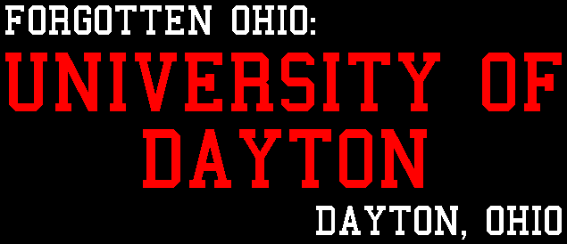

The University of Dayton

The University of Dayton is just south of downtown, situated alongside the city's largest cemetery. The ghost stories affiliated with its campus are listed below.
-
Liberty Hall
-
Liberty Hall is haunted by a hideous old man with a limp and bad teeth. The building was once an infirmary for students and university workmen, so he could be the ghost of one of the patients who died here. Today the building has been turned into offices.
-
Woodland Cemetery
-
Students at UD often find themselves in the huge cemetery adjacent to campus, sometimes to study or explore and sometimes just passing through, and they often see strange things there. The ghost of a pretty blonde girl sits atop a stone very close to campus, while the spirits of Johnny Morehouse and his pet dog roam the cemetery late at night.
Back